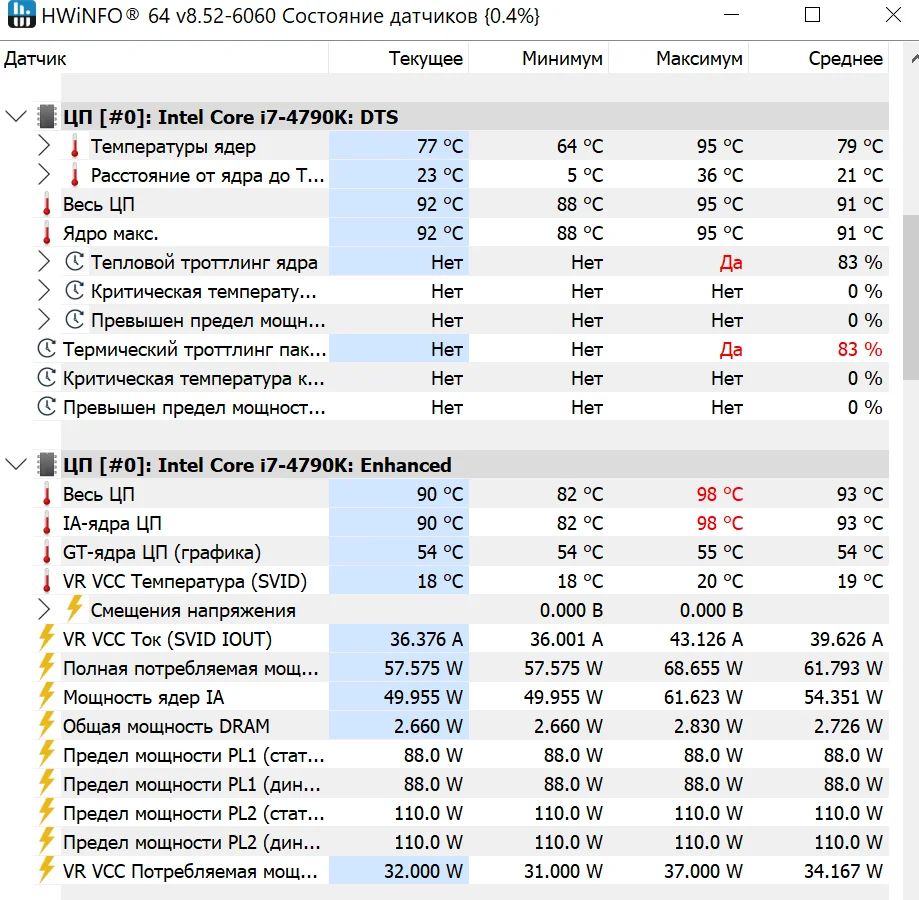

← all notes
27.09.2026#hardware
Having fun with my "new" i7-4790K. Linux booted on it right away, but the Windows 10 installer didn't want to be friends with it — it hung at the logo. It turned out to be about how the custom BIOS (Libreboot) initializes advanced stuff like VT-d: for a CPU that supports it, an empty DMAR table ended up in ACPI, and the Windows kernel hung dead on it. The i3, which has no VT-d, never had this problem. I don't need those features, so once again I rebuilt the BIOS to make initialization go the same way as on the i3.
Got the system running and plugged in a GT 730 (64-bit, 2 GB DDR3) as a temporary card. Realized it's really bad even by the standards of mid-range cards from the late 2000s. But most importantly, I realized that as soon as the CPU hits 100% load, even on simple things like unpacking archives, the temperature instantly shoots up to 100 degrees. Not only is that noisy, it also means throttling. And I want to squeeze out all 4.4 GHz :D
The CPU behaves as if it had poor contact with the heatsink. But the mounting pressure is maxed out and the paste is fresh. Most likely the problem is that under the lid there's no solder, just cheap thermal goo, which after 10+ years has probably lost its ability to conduct heat properly.
Either way, first I want to install a more efficient cooler — there's enough height clearance, so I'm going for it. But I've already found delidder models to print, and liquid metal is in my cart.
Got the system running and plugged in a GT 730 (64-bit, 2 GB DDR3) as a temporary card. Realized it's really bad even by the standards of mid-range cards from the late 2000s. But most importantly, I realized that as soon as the CPU hits 100% load, even on simple things like unpacking archives, the temperature instantly shoots up to 100 degrees. Not only is that noisy, it also means throttling. And I want to squeeze out all 4.4 GHz :D

The CPU behaves as if it had poor contact with the heatsink. But the mounting pressure is maxed out and the paste is fresh. Most likely the problem is that under the lid there's no solder, just cheap thermal goo, which after 10+ years has probably lost its ability to conduct heat properly.
Either way, first I want to install a more efficient cooler — there's enough height clearance, so I'm going for it. But I've already found delidder models to print, and liquid metal is in my cart.
Comments